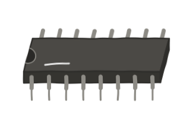
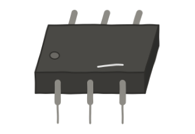
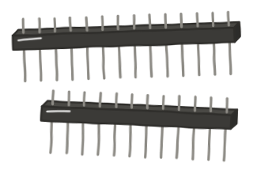

Kit Day · after the midterm · Thursday, October 8, 2026
Kit Day: meet your kit
By 4:50 your group will have found every part in the kit, learned how the board is wired, lit one LED, and checked the kit back in.
Teacher notes
Runs after the midterm, 3:20–4:50 (90 min). Everything on this page is lab-slide material (D-EL-L1SCOPE), so no lecture is needed first. No Ohm's law today: the LED and the board are borrowed as tools; why the resistor matters, and the 7 mA, are Lecture 1. Students who finish the exam early read this page quietly on their phones.
Minutes: groups 10 · meet the parts 15 · the board 10 · battery hookup 5 · first light 20 · rail test 5 · safety, clean-up and check-in 10 · buffer 5 = 80. If there's time: swap it around, 10. Total 90.
If the midterm runs long, cut in this order: swap it around; then the rail test (Lab 1 Part A's Test 5 repeats it); then speed up the walk-through (show the part, say its name, skip the description; still collect the 10, 100 and 220).
1. Your group (10 min)
Seven kits, seven groups of about five. Roles rotate every part of every lab.
- Builders (2): hands on the board.
- Reader (1): reads each step out loud from this page.
- Checker (1): before anyone calls James over, traces the loop out loud, strip by strip, from + back to −.
- Predictor (1): calls what will happen before the power goes on.
Write your group number and names at the top of the inventory sheet (section 8).
2. Meet the parts (15 min)
James shows each part on the screen, one at a time. Find it in your bag, hold it up, and put it on the table.
Breadboard
A white board full of holes, with a red line and a blue line running along its long edges.
Resistor strip
Tiny blue bodies, each about the size of a grain of rice, taped side by side with a paper label that names a value like "1K".
The too-small resistors: 10, 100 and 220
Strips labeled 10, 100 and 220. Your kit may not have a 220. They're too small to use with one LED on our 9 V battery; why is Lecture 1. Hold them up, then hand them to James. They never go back in the bag.
LED (light-emitting diode)
A small colored dome on two legs, one leg longer than the other. The kit has red, blue, white, green and yellow.
Pushbutton
A small square with four legs and a round button on top.
Potentiometer ("pot"), 10K
A part with three legs side by side and a top you can turn, printed "103".
Buzzers (one active, one passive)
Two black cylinders that look almost alike. One usually has a green circuit board showing underneath: that one is usually the passive one. James confirms which is which.
Photoresistors (there are two)
A small disc with a squiggly line across its face. Light changes how much it resists.
Electrolytic capacitors, 10 µF and 100 µF
Black cans with a stripe down one side.
Ceramic capacitors
Small brown discs on two legs.
Transistors (PN2222), for Lab 3
Black half-cylinders with three legs; the flat face is printed with letters.
Diodes (1N4007), for Lab 3
A black body with one gray band at one end, printed "07". Not a resistor: resistors are blue, with several color bands.
Power module, for Lab 3
A black board with a round jack, a USB socket and pins underneath.
Jumper wires
Wires with a metal pin on each end.
Also in the bag: the thermistor, a resistor that changes with heat. James will point it out; we barely use it.
Leave these in the bag all semester: a black chip with 16 legs, a black chip with 6 legs, and the strips of pin headers.



Remember
The resistors' paper label is the value. Read the label. The colored bands are for practice only.
Outside the book: The kit's contents. The kit's resistors have five color bands; Mims shows four.
3. How the board is wired (10 min)
Use steps K1 and K2 in the drawing above.
First, turn your board to match the drawing: the strip numbers count down from left to right, with 60 near the left end. Use the two rails along the top edge. The pair along the bottom edge isn't connected to them, and we don't use it.
- The power rails are the two long rows along the top edge. The row by the red line is +. The row by the blue line is −. On most boards each runs the whole length (you'll test yours in section 6), and the two don't touch.
- Every hole in a rail row is the same. "The + row above strip 58" means the + row hole nearest strip 58.
- Strips: each numbered column, seats a to e, is one strip. Those five seats sit on one piece of metal underneath, so they're all connected. Nothing connects sideways: strip 58 and strip 57 don't touch.
- The center gap splits every strip in two. 58a–e is a different strip from 58f–j.
- Parts and wires are the only bridges between strips.
Remember
Numbers are the strips. Letters are just seats in the same strip.
Long rows are power, short columns are parts.
The trap: the + row and the − row sit one hole apart. "Near the red line" and "near the blue line" are next-door neighbors.
Remember
Before you plug anything into a rail, put your finger on the line and slide straight in.
Outside the book: The kit board's layout and strip numbering. Mims (p. 96) calls a strip a "row of terminals." This class says strip.
4. Power: hooking up the battery (5 min)
James hands each group a 9 V battery, a snap with alligator clips, and two teal jumpers with black sleeves. The clips are too big for the board, so each clip bites the bare metal pin of a jumper, and that jumper goes into a rail.
- Clip the red clip onto one teal jumper's metal pin. That's your + jumper.
- Clip the black clip onto the other teal jumper's metal pin. That's your − jumper.
- Plug the − jumper into the − row at the left end of the board.
- Set the + jumper aside, away from the board. It goes into the + row last, once a circuit is built.
- Clip onto the metal pin, never the plastic sleeve. The plastic is there to stop current.
- Never let the two clips touch. That's a short across the whole battery. A warm battery means something is shorted: unclip it.
- Power off = lift the + jumper out of the rail and set it away from the board.
Outside the book: The purple dots in the drawings flow from + to −: conventional current, the way most schematics draw it. Mims draws electron flow, − to + (p. 47).
5. First light (20 min)
Use steps K3 to K6 in the drawing above. Every person places at least one part. Build it, then lift the + jumper, pull a part, and let the next person put it back, until everyone has had a turn.
Power off first: the − battery jumper is in the − row; the + jumper is out.
- Find the resistors labeled 1K and pull one off the tape. One leg goes in the + row above strip 58, the other in 58a. The resistor hops over the − row; don't let its leg land there.
- Red LED: long leg in 58c, short leg in 57c.
- Black jumper from 57a to the − row.
- Checker: trace it out loud. + row, 1K, strip 58, LED, strip 57, jumper, − row. Then put the + jumper in, last.
Remember
Long leg faces plus. If you can't tell, flip it. It won't break.
If it's dark
- Is the + jumper in the + row?
- Are both ends of your loop on the same rail? Then there's the same push at both ends, and nothing moves. (James's own first build did exactly this, three times.)
- Is every connection two legs in the same strip?
- Flip the LED. With the resistor in the loop, it won't break.
- Still dark? Call James. The checker traces the loop for him.
Outside the book: "Long leg = +." Mims shows only the flat mark on the LED's rim, on the cathode (−) side (p. 68); that the cathode is the short leg is outside the book. "It won't break" is true only with the resistor in the loop.
Teacher notes
Why the resistor, why it's dark when flipped, and the 7 mA: Lecture 1, then Lab 1 Part A. Don't teach them today; say "next week."
6. The rail test (5 min)
Use step K7 in the drawing above.
Power off. Move the black jumper's rail end into the − row at the far end of the board, away from the battery jumpers and past the middle. Check that it's in the − row, by the blue line. Power on.
Predict Does the LED stay lit?
Show result
Lit on most boards: the − row runs the full length. If yours goes dark (and the wire really is in the − row), your board's rails are split in the middle. Tell James before Lab 1.
Teacher notes
OI-08. Note each group's result. If any board has split rails, tell the whole class at the start of Lab 1 and show the fix: a jumper that bridges the two halves.
If there's time: swap it around (10 min)
Use steps K9 to K13 in the drawing above. Same parts, moved around: some swaps still work, some don't. The predictor calls each one before anyone touches the board. For every test: power off, make the change, power on.
- First light again: 1K from the + row above strip 58 to 58a, red LED long leg 58c, short leg 57c, black jumper from 57a to the − row.
- Power on.
Predict Move only the short leg, from 57c to 56c. Lit or dark?
Show result
Dark. Strip 56 doesn't touch strip 57, so the short leg no longer shares a strip with the jumper.
Predict Now move the jumper from 57a to 56a. Lit or dark?
Show result
Lit. Parts connect only by sharing a strip.
Predict Jumper back to 57a, and put the LED across the center gap (long leg 58e, short leg 57f). Lit or dark?
Show result
Dark. The gap splits strip 57 in two: 57f isn't connected to 57a.
Order doesn't matter: power off and clear the board, except the − battery jumper.
- Red jumper from the + row above strip 58 to 58a. It hops over the − row.
- LED: long leg 58c, short leg 57c.
- 1K from 57a to the − row.
Predict Power on. Now the LED comes first and the resistor after it. Lit or dark?
Show result
Lit. Order doesn't matter; direction does.
Teacher notes
Back pocket for stretching time (your call, 2026-10-03). These are Lab 1 Part A's Tests 2–4 and Lab 1's Extra #5, in the same words, minus the 7 mA (that waits for Lecture 1). Lab 1 still runs Tests 2–4 for every group, whether or not they did them today; a second pass on strips and the gap costs a few minutes of challenge time. (Lab 1's own cut list can still drop Test 4 if that lab runs long.) Groups that did the rail test today skip Test 5. Drawing steps K9–K13 match.
7. The safety rules for every lab
Safety
- Nothing below 330 Ω in series with one LED.
- The 10 Ω, 100 Ω and 220 Ω strips stay out of the bags. You hand them to James in section 2.
- At most 3 red LEDs in one series string.
- Power off to change parts: lift the + jumper.
- Never let the two battery clips touch. A warm battery? Unclip it.
- Batteries or the kit's low-voltage power module only. Never open or modify anything that plugs into the wall.
Why each rule matters: Lecture 1.
8. Check the kit back in (part of the last 10 min)
Group number:
Name:
Name:
Name:
Name:
Name:
Name:
Back in the bag:
Teacher notes
TODO (James): the sheet is now just group number, names and back-in-the-bag ticks (your call, 2026-10-03), and nothing typed on the page is saved or sent anywhere. So it no longer answers OI-04 (strip labels, pot type), OI-08 (rail test), OI-09 (counts) or OI-10 (which buzzer is passive, the transistor print): check those yourself as you walk around, or ask the groups out loud. Last two minutes today, ask out loud: "Anything you couldn't tick?" Write down any group that says yes. Run the same sheet again at the end of Lab 3: the Nov 5 back-pocket lab needs 4 transistors and a working passive buzzer per group.